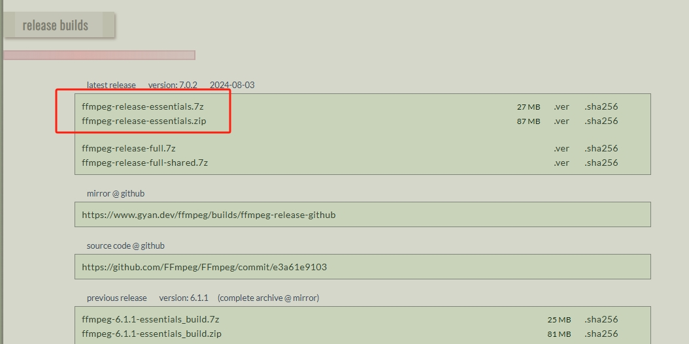
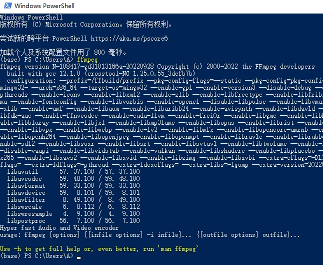
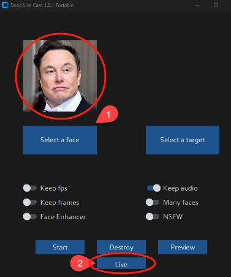

Deep-Live-Cam是一款基于Python的开源AI实时换脸工具，利用深度学习技术实现视频或直播中的人脸替换。它具备实时性、易用性和多平台兼容性，能在毫秒级内完成换脸效果，适用于娱乐、艺术创作、教育和商业广告等领域。
该工具通过面部识别、特征提取和面部融合等步骤，将源图像中的人脸特征与目标视频中的人脸进行无缝融合。用户只需准备相应环境，如安装Python、pip、git和ffmpeg等，并下载必要的模型文件，即可开始使用。
此外，Deep-Live-Cam的性能受到硬件配置的影响，用户可根据自身条件选择最优执行平台，并尝试使用GPU加速提升效率。
如果你的电脑没有GPU，那么不建议安装deep-live-cam。
安装 conda
conda 是用于管理Python 环境的包管理工具，使用conda我们可以在一个电脑上管理多个版本的python或者R，
每个工程都可以使用独立的环境， 这样可以防止环境的相互干扰。
我这里不演示如何安装conda， 因为如果你这个都不会安装，后面的教程建议放弃。
创建新的环境，使用python==3.10
使用如下命令创建新的环境：
1 | conda create -n "deepLiveCam" python=3.10 |
安装ffmpeg
下载地址： https://www.gyan.dev/ffmpeg/builds/#release-builds
下载到任意目录，解压。
将解压得到的bin目录，添加到电脑的环境变量中。
例如我解压得到的目录是： D:\Program Files (x86)\ffmpeg\bin
如果你不知道如何添加这个目录到系统的环境变量，参照下图， 或者看我的安装视频。
确认环境变量添加成功， 打开cmd，输入 ffmpeg ，如果能显示版本信息，那么恭喜你，ffmpeg安装成功。
下载安装主程序
你需要自己安装git， 如果git你不会安装，那么这个教程不适合你。
打开powershell或者cmd， 把工作目录定位到你存放源码的目录下。
1 | cd d:/dev |
下载 github 主程序：
1 | git clone https://github.com/hacksider/Deep-Live-Cam.git |
下载模型：
- GFPGANv1.4 https://huggingface.co/hacksider/deep-live-cam/resolve/main/GFPGANv1.4.pth
- inswapper_128_fp16.onnx https://huggingface.co/hacksider/deep-live-cam/resolve/main/inswapper_128_fp16.onnx
将下载的模型放到目录：
d:/dev/Deep-Live-Cam\models
安装依赖
首先激活我们创建的conda 环境：
1 | conda activate deep-live-cam |
还是在 powershell 或者 cmd 中， 切换到工作目录: cd .\Deep-Live-Cam\
安装依赖：
1 | pip install -r .\requirements.txt |
如果安装过程中， pytorch 总是安装失败， 你会发现可能是下载时间过长， 这个包太大了， 有2.4G， 那么我们最好手动下载，
pytorch 下载地址： https://download.pytorch.org/whl/torch/
我选择的是： torch-2.0.1+cu118-cp310-cp310-win_amd64.whl
然使用如下命令安装：
1 | pip install torch-2.0.1+cu118-cp310-cp310-win_amd64.whl |
错误解决
1 | error: Microsoft Visual C++ 14.0 or greater is required. Get it with "Microsoft C++ Build Tools": https://visualstudio.microsoft.com/visual-cpp-build-tools/ |
造成这个错误的原因是安装 insightface 时， 没有安装vc++，但是对于很多小白用户， 没必要安装编译工具，我们只要找到已经编译好的 insightface 就能安装。
在 这个链接 下载编译好的insightface.
我下载的是 insightface-0.7.3-cp310-cp310-win_amd64.whl, 下载很快， 然后使用如下命令安装：
1 | pip install insightface-0.7.3-cp310-cp310-win_amd64.whl |
使用GPU
因为CPU性能太差， 并且很多人反映替换后的视频脸部区域是一个黑色矩形，所以我决定使用GPU， 根据官网的教程， 我们使用如下方法安装：
- 安装 CUDA Toolkit 11.8， 因为我已经安装过（很多项目都用到）， 所以不详细介绍
- 安装依赖：
1 | pip install onnxruntime-gpu==1.16.3 |
- 启动程序：
1 | python run.py --execution-provider cuda |
使用方法
使用方法很简单， 准备好一个摄像头， 然后启动程序，在如图所示的地方上传一张图片， 然后点击“live”就可以实时换脸了：
FAQ
- 报错： AttributeError: ‘NoneType’ object has no attribute ‘shape’
用于替换人脸的照片不能包含中文， 所以更改为应为就可以解决这个报错。
- 如何将视频中的人物换脸
首先点击”select a face”， 选择一个脸图片， 然后点击“select a target”选择视频，最后点击“Start”就可以了。